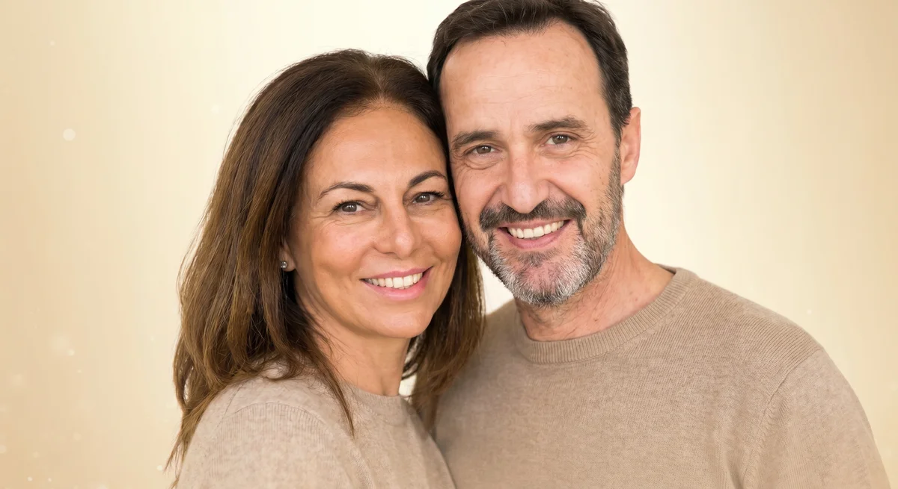
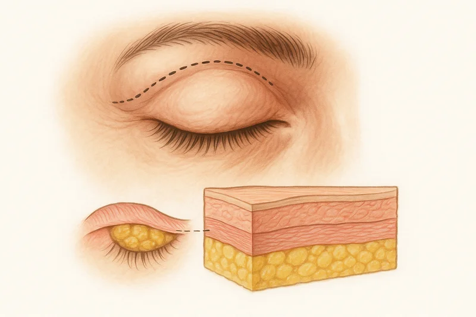
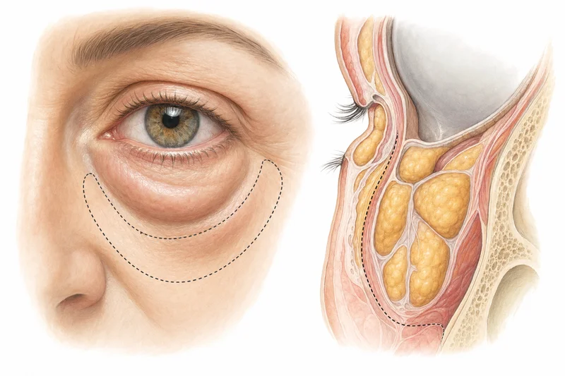
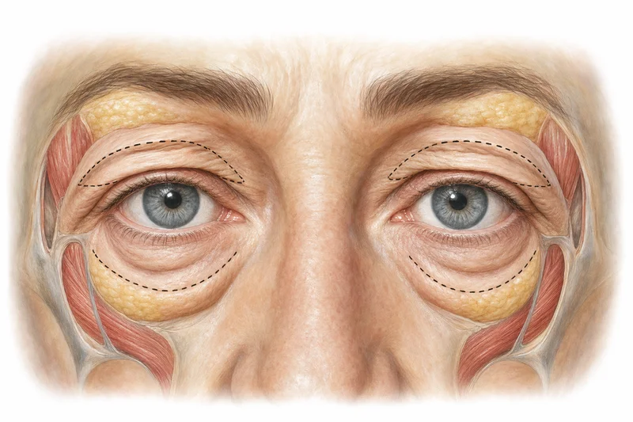
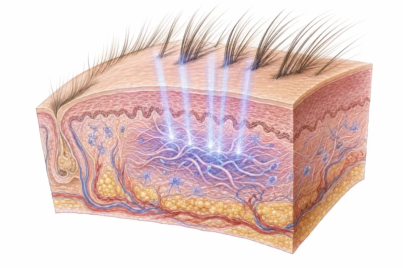

Schlupflider oder Tränensäcke? Eine Lidstraffung ist millimetergenaue Arbeit. Facharzt Massud Hosseini plant präzise, damit das Ergebnis natürlich bleibt – ohne dass Sie „gemacht" aussehen.
Unverbindlich · Diskret · Antwort in 48h

In diesem kurzen Video erklärt Chefarzt Massud Hosseini, wann eine Lidstraffung sinnvoll ist, wie der Eingriff abläuft und warum das Ziel immer ein natürlich frischer, wacher Blick ist – ohne künstliche Veränderung der Mimik.
Im Beratungsgespräch wird individuell geprüft, ob eine Oberlidstraffung, Unterlidstraffung oder eine kombinierte Behandlung sinnvoll ist.
„Habe meine Oberlider bei Dr. Hosseini straffen lassen und bin sehr zufrieden. Die OP verlief sehr gut und ich habe keinerlei Narben. Das Ergebnis ist so, wie ich es mir vorgestellt habe – meine Augen wirken wacher und frischer."
– Verifizierte Patientin · Jameda Bewertung 2024
Die Augenpartie prägt den gesamten Gesichtsausdruck. Schon kleine Veränderungen machen einen großen Unterschied – für einen wachen, erholten Blick.
Ihre Oberlider hängen und lassen Sie müder wirken, als Sie sich fühlen. Morgens sehen Sie in den Spiegel und erkennen sich selbst nicht wieder.
Schwellungen und dunkle Schatten unter den Augen, die trotz ausreichend Schlaf nicht verschwinden. Andere fragen ständig: „Bist du müde?"
Überschüssige Haut am Oberlid schränkt Ihr Gesichtsfeld ein – nicht nur ein ästhetisches, sondern auch ein funktionelles Problem im Alltag.
Persönliche Beratung – diskret und unverbindlich
Je nach Befund empfehlen wir die optimale Methode. Welche zu Ihnen passt, klären wir in der persönlichen Erstberatung.

Am häufigstenÜberschüssige Haut und – je nach Befund – Fettgewebe werden entfernt, die Lidkontur präzise neu geformt. Der Schnitt liegt in der natürlichen Lidfalte, sodass die spätere Narbe in der Regel sehr unauffällig verheilt.
Schlupflider entstehen durch nachlassende Gewebespannung. Die Haut senkt sich über die Lidfalte, der Blick wirkt schwerer. Je nach Ausprägung kann sogar das Sichtfeld eingeschränkt sein.

UnterlidBei der Unterlidstraffung werden überschüssige Haut sowie, wenn erforderlich, Muskel- und Fettgewebe korrigiert. Der Zugang erfolgt nahe am Lidrand und wird sehr fein vernäht, sodass die Narbe später meist kaum auffällt.
Tränensäcke entstehen häufig, wenn sich Fettgewebe vorwölbt und die Haut an Spannung verliert. Die Augenpartie wirkt schnell müde, Krähenfüße fallen stärker auf.

KombinationWenn sowohl Ober- als auch Unterlid betroffen sind, kann eine Kombinationsbehandlung empfehlenswert sein. Die gesamte Augenpartie wird als Ganzes geplant – für ein besonders harmonisches Ergebnis.
Auch organisatorisch ist es für viele Patient:innen angenehm, Planung und Heilungsphase in einem Eingriff zu bündeln.

Ohne OPFür Patient:innen, die sich eine Straffung ohne OP wünschen, kann eine Laserbehandlung mit dem Ultrapulse Encore eine schonende Alternative sein – insbesondere bei Hautqualität, Spannkraft und feinen Fältchen.
Das Laserlicht regt die Kollagenneubildung an und verbessert die Hautqualität. Wichtig: Bei stark ausgeprägten Schlupflidern oder Tränensäcken ist eine operative Korrektur häufig die effizientere Methode.
Eine Lidstraffung kommt für Frauen und Männer unterschiedlichen Alters infrage – nicht nur altersbedingt, auch genetisch oder durch äußere Einflüsse.
Nachlassende Gewebespannung am Oberlid. Die Haut senkt sich über die Lidfalte, der Blick wirkt schwerer und müder.
OberlidFettgewebe wölbt sich am Unterlid vor, die Haut verliert Spannung. Die Augenpartie wirkt müde und älter.
UnterlidDezent verjüngte, harmonische Augenpartie – ohne die eigene Mimik zu verändern. Frischer aussehen, wie man sich fühlt.
VerjüngungSichtfeld durch überschüssige Lidhaut eingeschränkt oder Lidkante liegt nicht optimal an – funktionelle Korrektur nötig.
FunktionellDie wichtigsten Fakten auf einen Blick.
Je nach Umfang (Oberlid, Unterlid oder Kombination). Ambulant durchgeführt.
In der Regel unter örtlicher Betäubung. Auf Wunsch ist auch eine Vollnarkose möglich.
Nach ca. 7–14 Tagen gesellschaftsfähig. Sport wieder nach ca. 4–6 Wochen möglich.
Eine Lidstraffung ist millimetergenaue Arbeit – das Ergebnis hängt entscheidend von Erfahrung, Anatomieverständnis und einem sicheren ästhetischen Blick ab. Bei KÖ-Aesthetics werden Sie von Fachärzten behandelt, die sich auf genau diesen Eingriff spezialisiert haben.
Vom ersten Beratungsgespräch bis zur letzten Nachsorge begleiten wir Sie persönlich – damit Sie sich fachlich wie menschlich gut aufgehoben fühlen.

„Die Augenpartie ist das Erste, was man an einem Gesicht wahrnimmt. Mein Ziel ist es, Ihren natürlichen Ausdruck zu bewahren und zu betonen – nicht zu verändern. Ein wacher, frischer Blick, der zu Ihnen passt."
Facharzt für Plastische & Ästhetische Chirurgie · Chefarzt KÖ-Aesthetics
Von der ersten Beratung bis zum Ergebnis: So begleiten wir Sie durch den gesamten Prozess – transparent, persönlich und auf Augenhöhe.
In vertrauensvoller Atmosphäre analysieren wir Ihre Augenpartie und besprechen Ihre Wünsche. Wir erklären Optionen verständlich, zeigen echte Vorher-Nachher-Beispiele und planen so, dass das Ergebnis dezent und natürlich bleibt.
⏱ Ca. 45–60 Minuten · Unverbindlich & diskretMassud Hosseini plant Ihren Eingriff persönlich: Befund, Hautbeschaffenheit und individuelle Anatomie bestimmen die optimale Methode – Oberlidstraffung, Unterlidstraffung, Kombination oder Laser.
📐 Maßgeschneiderte Planung für Ihre AugenpartieAlle Details zur Operation werden besprochen, offene Fragen geklärt. Sie erhalten individuelle Empfehlungen für die Zeit vor und nach dem Eingriff – Medikamente, Ernährung, Kompressionskleidung. Damit Sie bestens vorbereitet und mit einem guten Gefühl in den OP-Tag gehen.
In der Regel unter lokaler Betäubung wird die Lidstraffung millimetergenau durchgeführt. Der Schnitt liegt in der natürlichen Lidfalte (Oberlid) bzw. nahe am Lidrand (Unterlid) – für kaum sichtbare Narben.
🏥 Ambulant im PRADUS Medical Center DüsseldorfNach ca. 7–14 Tagen sind Sie wieder gesellschaftsfähig. Schwellungen und Blutergüsse klingen schrittweise ab. Unser Team begleitet Sie engmaschig mit Kontrollterminen. Nach 4–6 Wochen können Sie Sport wieder aufnehmen.
💬 Persönliche Erreichbarkeit bei Fragen – auch nach der OPDas endgültige Ergebnis ist nach wenigen Wochen sichtbar. Viele Patient:innen berichten von einem wacheren, frischeren Blick und einem ganz neuen Lebensgefühl – „Ich sehe endlich wieder so aus, wie ich mich fühle."
Der erste Schritt zu Ihrem wachen, frischen Blick
Echte Erfahrungen von verifizierten Patient:innen – ungeschönt und direkt.
„Nach einer misslungenen Unterlidstraffung vor vier Jahren, die zu Narben geführt hat, war ich am Ende meiner Hoffnung. Doch Herr Hosseini hat ein Ergebnis erzielt, das meine Erwartungen weit übertroffen hat. Die Narbe ist kaum noch sichtbar!"
„Habe im Februar meine Oberlider bei Dr. Hosseini straffen lassen und bin sehr zufrieden. Die OP verlief sehr gut und ich habe keinerlei Narben. Das Ergebnis ist genau so, wie ich es mir vorgestellt habe."
„Meine Augen strahlen und ich sehe einige Jahre jünger aus! Dr. Hosseini hat sich sehr viel Zeit genommen bei der Beratung und mir genau erklärt, was möglich ist. Das Ergebnis ist so natürlich – einfach perfekt."
„Absolute Empfehlung! Er nimmt sich wirklich Zeit und geht auf das Anliegen ein. Als Patient fühlt man sich verstanden – er findet gezielt die passende Methode, abgestimmt auf Wunsch und persönliche Situation."
„Der Arzt meines Vertrauens. Ich hatte große Angst vor dem Eingriff an den Augen, aber Dr. Hosseini hat mir alle Ängste genommen. Fachlich absoluter Profi und menschlich einfach top. Mein Blick ist offener und frischer."
„Ich habe mich zu jeder Zeit kompetent beraten gefühlt. Die Lidstraffung wurde zu meiner vollsten Zufriedenheit durchgeführt. Fast keine Schwellungen! Nach 10 Tagen war ich wieder voll gesellschaftsfähig. Von Herzen empfohlen."

Facharzt für Plastische & Ästhetische Chirurgie · Chefarzt KÖ-Aesthetics Düsseldorf
Seit über 15 Jahren ist Massud Hosseini spezialisiert auf die ästhetische Lidchirurgie. Er verbindet chirurgische Präzision mit einem feinen Gespür für die natürliche Augenpartie – für Ergebnisse, die wach und frisch wirken, ohne „gemacht" auszusehen.
Seine Philosophie: Jede Lidstraffung ist millimetergenaue Arbeit. Jede:r Patient:in verdient eine individuelle Beratung, eine präzise Planung und ein Ergebnis, das zum eigenen Gesicht passt – nicht zu einer Norm.
Unsere moderne Praxisklinik befindet sich im 3. Obergeschoss des PRADUS Medical Center in Düsseldorf – zentral gelegen, mit stilvollen Behandlungs- und OP-Räumen sowie einer Atmosphäre, in der Sie sich wohlfühlen.
Wir nehmen uns Zeit, hören genau hin und beraten Sie ehrlich – auf Augenhöhe. Denn bei uns steht der Mensch im Mittelpunkt, nicht nur das Verfahren.


Hier finden Sie Antworten auf die wichtigsten Fragen rund um die Lidstraffung. Für eine persönliche Beratung stehen wir Ihnen jederzeit gerne zur Verfügung.
Eine Lidstraffung dauert in der Regel ca. 1 Stunde – je nachdem, ob nur das Oberlid, das Unterlid oder beide Bereiche korrigiert werden. Der Eingriff erfolgt ambulant, meist unter örtlicher Betäubung.
Nein, der Eingriff wird unter lokaler Betäubung durchgeführt, sodass Sie während der OP keine Schmerzen spüren. In den ersten Tagen danach können leichte Spannungsgefühle und Schwellungen auftreten, die mit einfachen Kühlmaßnahmen und ggf. leichten Schmerzmitteln gut zu behandeln sind.
Die meisten Patient:innen sind nach ca. 7–14 Tagen wieder gesellschaftsfähig. Schwellungen und Blutergüsse klingen in dieser Zeit schrittweise ab. Sport ist nach ca. 4–6 Wochen wieder möglich.
Bei der Oberlidstraffung liegt der Schnitt in der natürlichen Lidfalte – die Narbe ist nach der Heilung in der Regel kaum sichtbar. Bei der Unterlidstraffung verläuft der Zugang nahe am Lidrand und wird sehr fein vernäht. Die meisten Patient:innen berichten, dass die Narben nach einigen Wochen praktisch nicht mehr auffallen.
Ja, eine Kombination aus Ober- und Unterlidstraffung ist möglich und sogar häufig empfehlenswert, wenn beide Bereiche betroffen sind. Der Vorteil: Die gesamte Augenpartie wird harmonisch geplant und Sie haben nur eine Heilungsphase.
Die Kosten richten sich nach Behandlungsumfang (Oberlid, Unterlid oder Kombination), Methode und individuellem Befund. Wir nennen bewusst keinen pauschalen Festpreis online. In der Erstberatung erhalten Sie eine transparente Einschätzung mit konkretem Kostenrahmen.
Ja, für leichte Erschlaffung und feine Fältchen kann eine Laser-Lidstraffung (Ultrapulse Encore) eine schonende Alternative sein. Dabei wird die Kollagenneubildung angeregt und die Hautqualität verbessert. Bei stark ausgeprägten Schlupflidern oder Tränensäcken ist eine operative Korrektur jedoch meist effektiver.
Es gibt kein festes Mindestalter. Schlupflider und Tränensäcke können auch genetisch bedingt bei jüngeren Patient:innen auftreten. Entscheidend ist der individuelle Befund – ob das Problem altersbedingt, genetisch oder durch äußere Einflüsse verursacht wird, klären wir in der persönlichen Beratung.
Füllen Sie das Formular aus und wählen Sie im nächsten Schritt direkt einen Termin im Online-Kalender.
Direkter Zugang zum Kalender
Bestätigung & Infos per E-Mail
In entspannter Atmosphäre, mit echten Beispielen
Schonend, präzise, individuell auf Sie abgestimmt
📞 Kein passender Termin dabei?
Dann ruft Sie ein Teammitglied innerhalb von 48h persönlich an, um offene Fragen zu klären und gemeinsam einen Termin zu finden – ganz entspannt und unverbindlich.